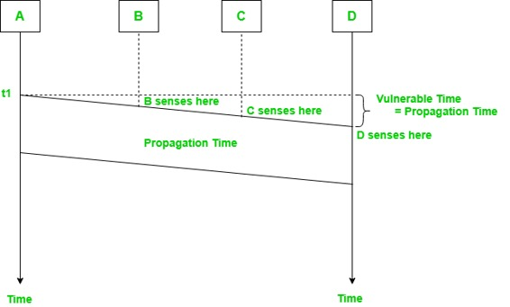
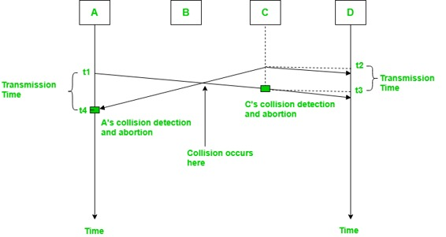
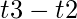
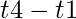
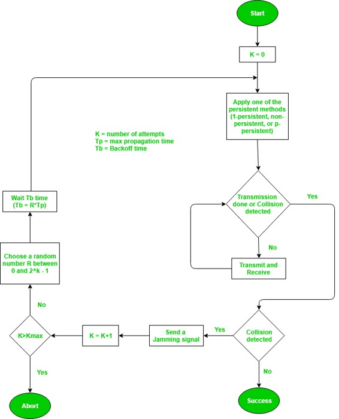
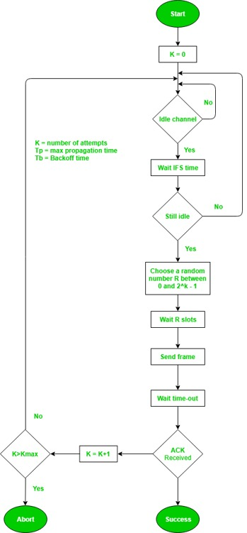

Prerequisite – Multiple Access Protocols
This method was developed to decrease the chances of collisions when two or more stations start sending their signals over the datalink layer. Carrier Sense multiple access requires that each station first check the state of the medium before sending.
Vulnerable Time –
Vulnerable time = Propagation time (Tp)

The persistence methods can be applied to help the station take action when the channel is busy/idle.
1. Carrier Sense Multiple Access with Collision Detection (CSMA/CD) –
In this method, a station monitors the medium after it sends a frame to see if the transmission was successful.If succcessful, the station is finished, if not, the frame is sent again.

In the diagram A starts send the first bit of its frame at t1 and since C sees the channel idle at t2, starts sending its frame at t2. C detects A’s frame at t3 and aborts transmission. A detects C’s frame at t4 and aborts its transmission. Transmission time for C’s frame is therefore  and for A’s frame is .
So, the frame transmission time (Tfr) should be atleast twice the maximum propagation time (Tp). This can be deduced when the two stations involved in collision are maximum distance apart.
Process –
The entire process of collision detection can be explained as follows:

Throughput and Efficiency – The throughput of CSMA/CD is much greater than pure or slotted ALOHA.
- For 1-persistent method throughput is 50% when G=1.
- For non-persistent method throughput can go upto 90%.
2. Carrier Sense Multiple Access with Collision Avoidance (CSMA/CA) –
The basic idea behind CSMA/CA is that the station should be able to receive while transmitting to detect a collision from different stations. In wired networks, if collision has occurred then the energy of received signal almost doubles and the station can sense the possibility of collision. In case of wireless networks, most of the energy is used for transmission and the energy of received signal increases by only 5-10% if collision occurs. It can’t be used by station to sense collision. Therefore CSMA/CA has been specially designed for wireless networks.
These are three type of strategies:
- InterFrame Space (IFS) – When a station finds the channel busy, it sends for a period of time called IFS time. IFS can also be used to define the priority of of a station or a frame. Higher the IFS lower is the priority.
- Contention Window – It is the amount of time divided into slots.A station which is ready to send frames chooses random number of slots as wait time.
- Acknowledgements – The positive acknowledgements and time-out timer can help guarantee a successful transmission of the frame.
Process –
The entire process for collision avoidance can be explained as follows:
